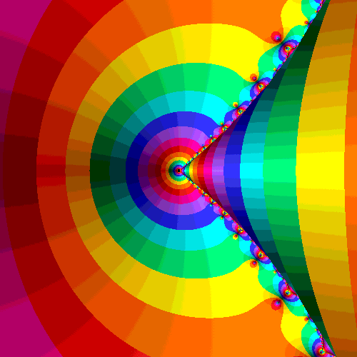

Changes Create Digests
This is when Angular dirty-checks everything

The is the best and worst part of Angular
Let's Show Off $rootScope.$digest
- Add a hover event to THIS LIST
- Let's add a
$watchermethod in the menu - hovers: {{hoverCount || 0}}
Rolling Changes
Change in one part of your app can cause changes in another part. Because of this, a change in one place causes Angular to check the entire app for rolling changes that may need to be reflected elsewhere.
Let's Look At The $digest code
in angular.js, line: 12,740
How do we cause $rootScope.$digest's
- {{way}}
Adding Events
All ngAction methods cause a
Don't use the following methods if you can help it, and you probably can
$digest cycle- ng-mouseover
- ng-mouseenter
- ng-mouseleave
- ng-keypress
- ng-keydown
- ng-keyup
- ng-scroll
$scope.$apply vs. $scope.$digest
$scope.$digest
$scope.$apply